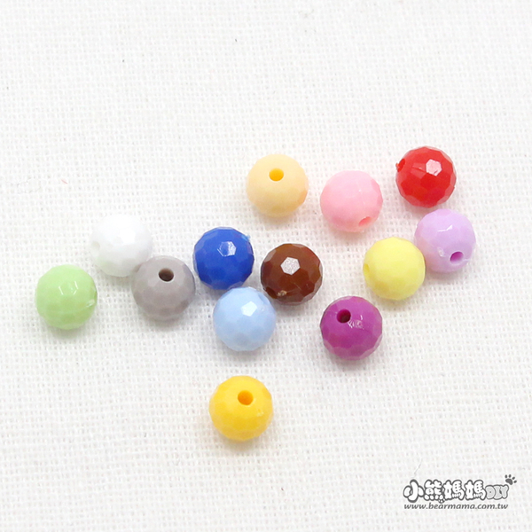
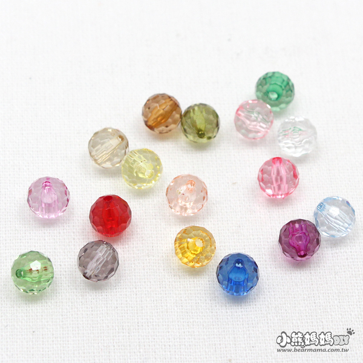
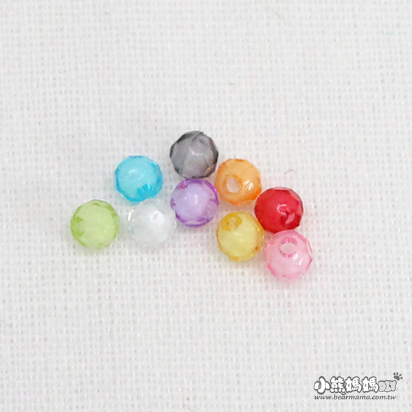
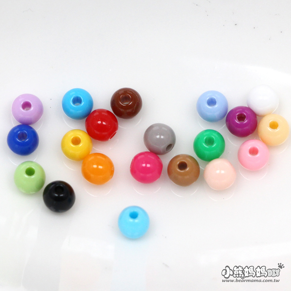
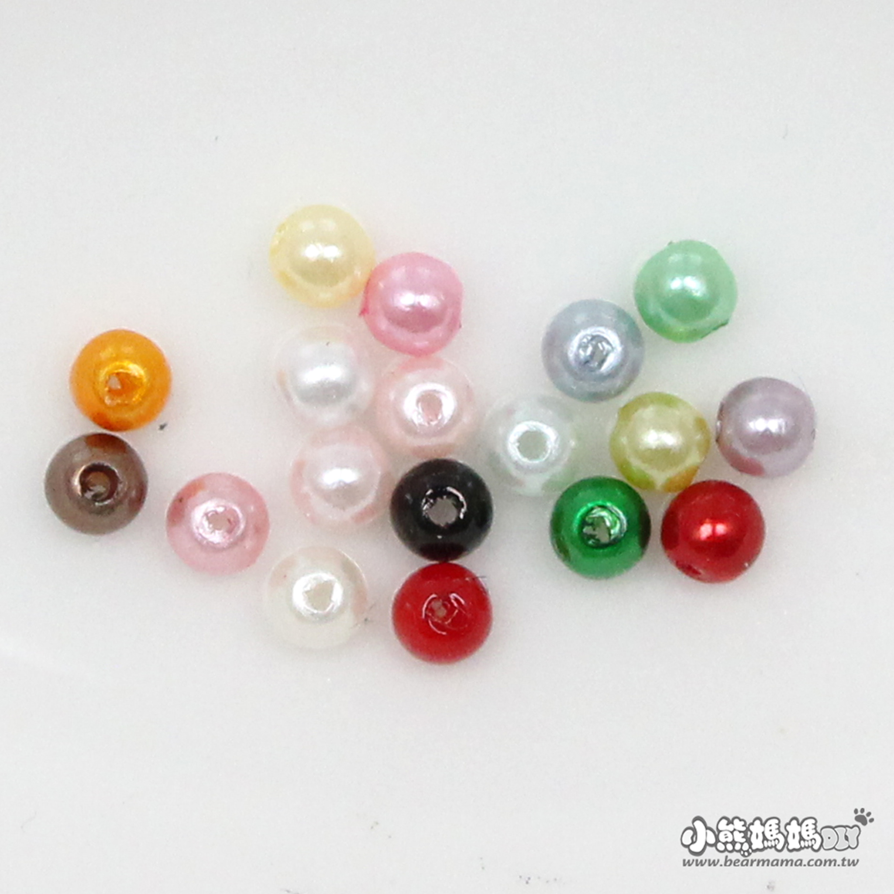
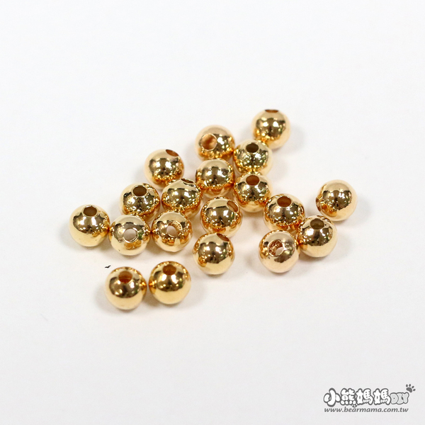
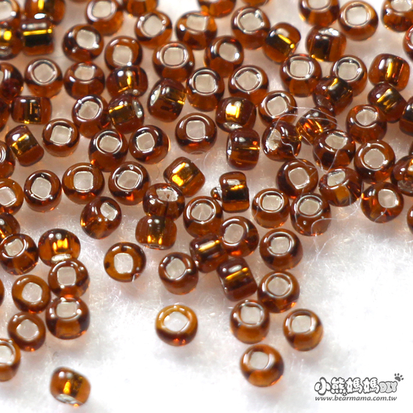
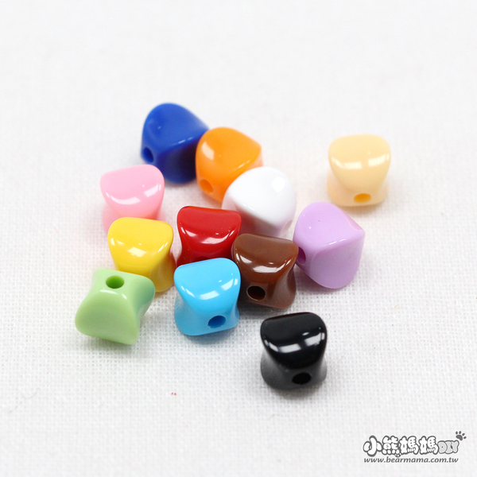
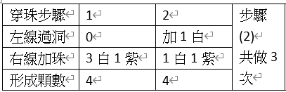
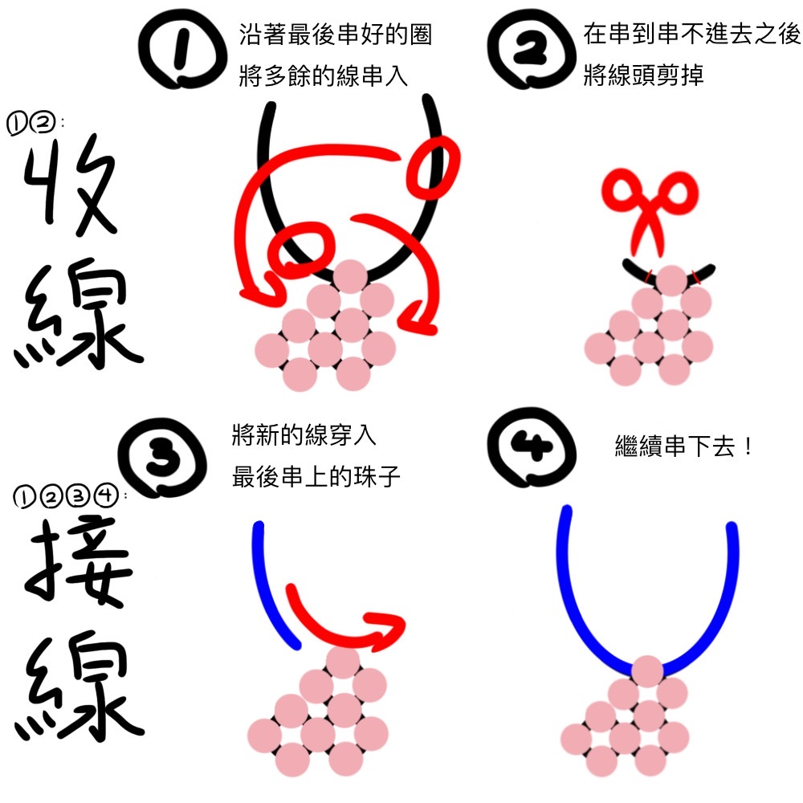

清河智串珠中...
早安午安氯化銨^^)b
這邊是一個高二學生從零開始架設的串珠網頁˙v˙)
在這個網站裡你將會看到:
- 串珠及工具介紹
- 串珠表格介紹
- 串珠手法簡介
- 一些我自己的作品嘿嘿^^)
希望在瀏覽完這個網站後你可以有所收穫!!!>v<)/
串珠種類介紹
在製作串珠作品前，先了解串珠的種類和各自的特色，可以更順利地尋找到適合作品的珠子種類!!


地球珠
具有許多小切面的類圓形純色彩珠，有透明和不透明兩種樣式，看起來中性而百搭，也帶著些許中國風，是非常受歡迎的珠子種類。
常用大小4mm~12mm

珠中珠
由外面的透明層包裹在內部的不透明部分，樣式、形狀多變，看起來中性而百搭，也有些許俏皮可愛的感覺，是非常受歡迎的珠子種類。
常用大小4mm~12mm

糖果珠
為純色的不透明圓形彩珠，看起來較為俏皮可愛，十分百搭，不透明的特性讓他能很好的表現自身顏色，很適合做需要明顯顏色的作品。
（本人最常使用這種珠子^ ^）
常用大小3mm~12mm

油珠
具有珍珠光澤，或者說霧面金屬光澤的圓珠，看起來有些許高級感

鍍金珠
具有明亮金屬光澤的圓珠，可以做為小部分提亮。

楊桃珠
具有稜角的類方形彩珠，很適合單層平面作品，其形狀可以起到良好的固定作用，也適合製作方正的立體作品，如面紙盒、方形筆筒。

日本珠
具有些微琉璃光澤的圓形扁珠，大部分尺寸較小，常用於作品細長部分，如：葉梗、繩子。
*以上圖片皆取自小熊媽媽官網*
TIP!
選擇珠子大小
珠子的大小通常會介於2~12mm之間，
將相異大小的珠子交錯使用不僅可以表現作品不同部分的不同體積特性，
還能以最省時間的方法為作品增加立體感，減少破碎感。
但在整個作品皆使用統一大小的珠子時，本人會推薦使用較小的珠子，
一來珠子間的縫隙會比較小，更有整體感，
二來可以減輕像素感，也可以做更細式的圖樣，
然後就是--比較便宜啊!!!(高中生乾癟錢包的哭泣聲iAi)
TIP!
選擇線材
串珠時最常使用的線材為沒有伸縮性的釣魚線，
如果需要有彈性的線材，可以考慮彈力線和蠶絲線，
要注意的是兩種線材都容易斷裂，需要定期更換喔^^)
而線的粗細請考慮珠子的大小與重量，
太粗會不方便串，太細可能會承受不住珠子的重量，
不過大家放心^^)我上面推薦的都是很輕的珠子喔!
至於什麼大小的珠子適合搭什麼粗細的線，我整理在下方啦!
| 珠子大小 |
<2mm |
3~4mm |
6~8mm |
10~12mm |
| 線的粗細 |
0.3mm |
0.4mm |
0.6mm |
0.8mm |
如果作品中會用到不同大小的珠子，請用最小珠子適用的線!
串珠輔助工具介紹
在串珠過程中一定會需要的方便又實用小工具!!(這些大多都是我實在忍無可忍才買入的QAQ絕對實用RRR)
串珠表格介紹
如果你找到了串珠模板但看著很抽象的表格開始一個頭兩個大O_O)的話，
沒事，這很正常，因為我剛開始也被這表格搞得死死的...Q_Q)
先看範例˙v˙)_

最前面的字是什麼意思呢?
- 穿珠步驟:標示目前的步驟
- 左線過洞:讓離已完成部分較近的線頭穿入最靠近線頭的珠孔
- 右線加珠:在離已完成部分較遠的線頭依順序穿入珠子
- 形成顆數:將離已完成部分較近的線頭穿入最新穿入的珠子後
該圈會穿入多少珠子
一些小小的注意事項!!
- 沒有哪一條線固定為左線或右線!
兩者僅代表離已完成部分較近或較遠
(左手握的就是左線，反之亦然)
- 如果看不懂表格，可以去看成品或成品照，
會比較容易搞懂喔!
- 一定要知道自己現在在串哪裡!!!
串珠是一條線一直串下去的，做錯了很難拆QAQ)
串珠基礎手法介紹
要串珠所需的必備技能!
線不夠了怎麼辦O口O)
不用拆掉用新線重串!!!我們可以接線!!!
串好了之後要怎麼固定珠子呢ˊ˙ ˙)
可以用多的線收線!!!
有些人也會先打結再藏線啦
但本人秉持著"只要線串的夠緊就不用打結"的信念(什麼東西)
另一方面我不太喜歡繩結...有點突兀...
下面是圖示!

串珠基礎手法介紹影片
上面的圖片看起來太抽象嗎?沒關係!這裡還有實體的影片可以參考!
串珠作品展示
恭喜你學完串珠相關基礎知識了!來看看這邊吧，這些都是串珠可以做出來的成品喔!
銘謝
感謝老師在國小五年級時，帶我進入串珠的世界
感謝國中三年的班導，讓我看到串珠的無限可能性
感謝媽媽的金錢buff還有技術支持--即使他也是第一次接觸串珠
感謝每個喜歡我的串珠還說我串珠很屌的同學˙v˙)b
感謝即是這個圈子很冷門，還是堅持在裡面持續打滾的自己
還有感謝連銘謝都看完的你願意相信一個高中生可以帶給你一些新的東西!!!
...還是你有找不到的東西?
打在下面!!!說不定我哪天就加上來了呢!
再次謝謝你的瀏覽!^^)/